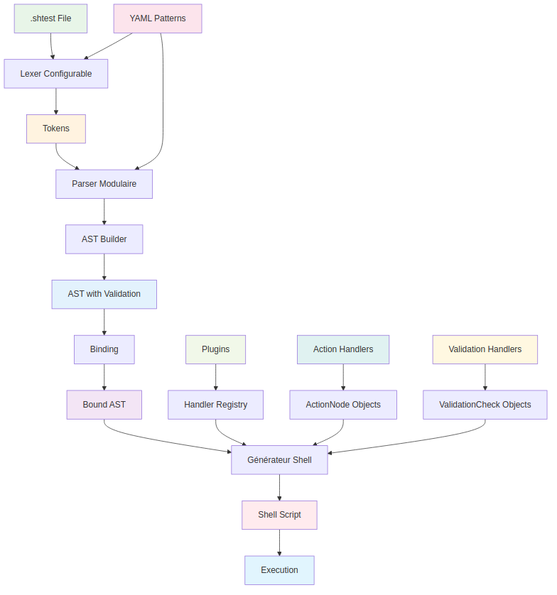

Guide de Démarrage Rapide pour Développeurs
Ce guide vous aide à comprendre rapidement l'architecture modulaire de KnightBatch et à commencer à développer.
Architecture en 5 Minutes

Pipeline de Compilation Détaillé

Pipeline détaillé montrant le flux de données de la compilation.
Pipeline de Compilation
- Tokenisation : Le fichier
.shtestest découpé en tokens par le lexer configurable basé sur des patterns YAML. - Parsing : Les tokens sont analysés par le parser modulaire pour produire un AST (arbre syntaxique).
- Construction de l'AST : L'AST builder valide et normalise la structure selon la grammaire configurée.
- Binding :
- Le binder relie chaque validation à la bonne action (notamment pour
scope: last_action). - Résout les variables et le contexte.
- Prépare l'AST pour la génération de code.
- Pourquoi c'est important ? Sans binding, certaines validations seraient orphelines ou mal appliquées, ce qui fausserait les résultats des tests.
- Génération de code : Le générateur de shell parcourt l'AST lié et produit un script shell exécutable.
- Exécution : Le script shell généré peut être exécuté directement.
Composants Principaux
1. Core (core/)
- visitor.py : Pattern Visitor pour parcourir l'AST
- ast.py : Nœuds AST de base (ActionNode, ValidationNode, etc.)
- context.py : Contexte de compilation partagé
2. Lexer Modulaire (parser/lexer/)
- configurable_lexer.py : Lexer principal
- pattern_loader.py : Chargement des patterns YAML
- filters.py : Filtres de tokens
- tokenizers.py : Tokenizers spécialisés
3. Parser Modulaire (parser/)
- configurable_parser.py : Parser principal
- ast_builder.py : Constructeur d'AST avec validation
- grammar.py : Grammaire configurable
4. Compilateur Modulaire (compiler/)
- compiler.py : Compilateur principal
- visitors.py : Visiteurs pour la génération de code
- matcher_registry.py : Registre des matchers
- utils.py : Utilitaires de compilation
Premiers Pas
1. Installation
# Cloner le repository
git clone <repository-url>
cd batch-testing
# Installer les dépendances
pip install -r src/requirements.txt
# Vérifier l'installation
python src/shtest_compiler/compile_file.py --help
2. Premier Test
Créez un fichier test.shtest :
3. Compilation
# Compilation simple
python src/shtest_compiler/compile_file.py test.shtest
# Compilation avec debug
python src/shtest_compiler/compile_file.py test.shtest --debug
4. Exécution
Développement de Plugins
Structure d'un Plugin
src/shtest_compiler/plugins/mon_plugin/
├── __init__.py
├── config/
│ ├── patterns_actions.yml
│ ├── patterns_validations.yml
│ └── handler_requirements.yml
├── action_handlers/
│ ├── __init__.py
│ └── mon_action.py
└── handlers/
├── __init__.py
└── ma_validation.py
Pattern des Handlers

Flux de données montrant comment les paramètres passent des patterns YAML aux handlers.
Handler d'Action
# action_handlers/mon_action.py
from shtest_compiler.ast.shell_framework_ast import ActionNode
class MonAction(ActionNode):
def __init__(self, param1, param2="default"):
self.param1 = param1
self.param2 = param2
def to_shell(self):
return f"echo '{self.param1} {self.param2}' > output.txt"
def handle(params):
param1 = params.get("param1")
param2 = params.get("param2", "default")
return MonAction(param1, param2)
Handler de Validation
# handlers/ma_validation.py
from shtest_compiler.ast.shell_framework_ast import ValidationCheck
def handle(params):
param1 = params.get("param1")
actual_cmd = f"""# Check if {param1} is valid
if [ -f "{param1}" ]; then
echo "Validation successful"
exit 0
else
echo "Validation failed" >&2
exit 1
fi"""
return ValidationCheck(
expected=f"Ma validation {param1}",
actual_cmd=actual_cmd,
handler="ma_validation",
scope="last_action",
params={"param1": param1}
)
Configuration YAML
# config/patterns_actions.yml
actions:
- phrase: "Mon action {param1}"
handler: mon_action
aliases:
- "mon action {param1}"
- "^mon action (.+)$"
# config/patterns_validations.yml
validations:
- phrase: "Ma validation {param1}"
handler: ma_validation
scope: last_action
aliases:
- "ma validation {param1}"
- "^ma validation (.+)$"
# config/handler_requirements.yml
mon_action:
description: "Does something with the given parameter"
params:
- name: param1
type: str
required: true
description: "The parameter for the action"
ma_validation:
description: "Validates something with the given parameter"
params:
- name: param1
type: str
required: true
description: "The parameter to validate"
Tests
Workflow de Tests
Workflow complet de tests montrant le processus de validation, compilation et exécution.
Tests Unitaires
# tests/unit/test_mon_plugin.py
import pytest
from shtest_compiler.plugins.mon_plugin.action_handlers.mon_action import handle
def test_mon_action_handler():
"""Test le handler d'action."""
params = {"param1": "test", "param2": "value"}
result = handle(params)
assert result is not None
assert hasattr(result, 'to_shell')
assert "test value" in result.to_shell()
def test_ma_validation_handler():
"""Test le handler de validation."""
from shtest_compiler.plugins.mon_plugin.handlers.ma_validation import handle as validation_handle
params = {"param1": "test.txt"}
result = validation_handle(params)
assert result is not None
assert hasattr(result, 'actual_cmd')
assert "test.txt" in result.actual_cmd
Tests E2E
# tests/e2e/mon_plugin_test.shtest
Étape: Test de mon plugin
Action: Mon action test.txt
Résultat: Ma validation test.txt
# Compiler et tester
python -m shtest_compiler.run_all --input tests/e2e/mon_plugin_test.shtest
# Vérifier la syntaxe
python src/shtest_compiler/verify_syntax.py tests/e2e/mon_plugin_test.shtest
# Exécuter le script généré
bash output/mon_plugin_test.sh
Debug et Validation
Mode Debug
# Activer le debug global
export SHTEST_DEBUG=1
# Compilation avec debug
python src/shtest_compiler/compile_file.py test.shtest --debug
Validation de Syntaxe
# Validation d'un fichier
python src/shtest_compiler/verify_syntax.py test.shtest
# Validation d'un répertoire
python src/shtest_compiler/verify_syntax.py tests/
# Mode verbose
python src/shtest_compiler/verify_syntax.py test.shtest --verbose
Debug des Plugins
# Activer le debug pour les plugins
import logging
logging.basicConfig(level=logging.DEBUG)
# Vérifier la découverte des plugins
from shtest_compiler.command_loader import discover_plugins
plugins = discover_plugins()
print("Plugins trouvés:", plugins)
# Vérifier le registre des handlers
from shtest_compiler.command_loader import build_registry
handler_registry, all_actions, all_validations = build_registry()
print("Handlers disponibles:", list(handler_registry.keys()))
Outils de Développement
Extension VS Code
L'extension VS Code KnightBatch offre :
- Coloration syntaxique complète pour les fichiers .shtest
- Commandes intégrées pour compilation, vérification et analyse
- Snippets intelligents pour accélérer l'écriture
- IntelliSense avec autocomplétion et validation en temps réel
Tests Automatisés
# Tests unitaires
python -m pytest tests/unit/ -v
# Tests E2E
python -m shtest_compiler.run_all --input tests/e2e/
# Tests d'intégration
for test in tests/integration/*.sh; do
bash "$test"
done
Profilage
# Profilage des performances
import time
from shtest_compiler.compiler.compiler import ModularCompiler
start_time = time.time()
compiler = ModularCompiler()
result = compiler.compile_file("test.shtest")
end_time = time.time()
print(f"Compilation time: {end_time - start_time:.2f}s")
Bonnes Pratiques
Conception de Plugins
- Séparation des responsabilités : Handlers, validations, et configuration séparés
- Gestion d'erreurs : Toujours gérer les cas d'erreur et retourner des codes appropriés
- Configuration flexible : Utiliser des variables d'environnement et des valeurs par défaut
- Documentation : Documenter chaque fonction et paramètre
Tests
- Tests unitaires : Tester chaque fonction individuellement
- Tests d'intégration : Tester l'interaction avec le système principal
- Tests E2E : Tester avec des fichiers
.shtestréels - Tests négatifs : Tester les cas d'erreur et d'échec
Performance
- Validation légère : Les validations doivent être rapides
- Gestion des ressources : Libérer les ressources (connexions, fichiers)
- Cache : Mettre en cache les résultats coûteux
- Logging : Logger les opérations importantes pour le debug
Exemples Avancés
Plugin avec Base de Données
from shtest_compiler.ast.shell_framework_ast import ActionNode
class DatabaseQueryAction(ActionNode):
def __init__(self, query, database_url):
self.query = query
self.database_url = database_url
def to_shell(self):
return f"""# Execute database query
psql "{self.database_url}" -c "{self.query}" \\
&& echo "Query executed successfully" \\
|| (echo "Database query failed" >&2 && exit 1)"""
def handle(params):
query = params.get("query")
database_url = params.get("database_url", "$DATABASE_URL")
return DatabaseQueryAction(query, database_url)
Plugin avec API REST
from shtest_compiler.ast.shell_framework_ast import ActionNode
class APICallAction(ActionNode):
def __init__(self, endpoint, method="GET", api_key=None):
self.endpoint = endpoint
self.method = method
self.api_key = api_key
def to_shell(self):
headers = f"-H 'Authorization: Bearer {self.api_key}'" if self.api_key else ""
return f"""# API REST call
curl -X {self.method} {headers} "$API_BASE_URL{self.endpoint}" \\
&& echo "API call successful" \\
|| (echo "API call failed" >&2 && exit 1)"""
def handle(params):
endpoint = params.get("endpoint")
method = params.get("method", "GET")
api_key = params.get("api_key", "$API_KEY")
return APICallAction(endpoint, method, api_key)
Dépannage
Problèmes Courants
- Plugin non trouvé : Vérifier le chemin et la structure des dossiers
- Handler non appelé : Vérifier les patterns YAML et les noms de handlers
- Variables non définies : Vérifier la configuration et les variables d'environnement
- Erreurs de syntaxe : Vérifier les commandes shell générées
Debug
# Activer le debug pour les plugins
import logging
logging.basicConfig(level=logging.DEBUG)
# Vérifier l'enregistrement
from shtest_compiler.command_loader import discover_plugins
plugins = discover_plugins()
print("Plugins trouvés:", plugins)
Conclusion
Ce guide vous a donné les bases pour commencer à développer avec KnightBatch. L'architecture modulaire permet une extensibilité maximale tout en maintenant la simplicité d'utilisation.
Pour plus d'informations, consultez : - Architecture Modulaire - Créer un Plugin - Tests et Validation